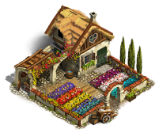

<div class="{{class}}_container">
	<div class="{{class}}_img">
		<h3>Ферма #{{needToAddObject.ID}}</h3>
		
	</div>
	<div>
		<form [formGroup]="resourceForm">
			<div class="{{class}}_inputs">
				<div class="{{class}}_farm-now">
					<mat-form-field>
						<mat-label>Текущее кол-во</mat-label>
						<input matInput type="number" formControlName="fieldValueInput">
						<mat-hint>На {{timeToEmptyFormated}}</mat-hint>
						<!-- <mat-error *ngIf="getTimeToEmpty() < 1">
							Мало <strong>Мало</strong>
						</mat-error>  -->
					</mat-form-field>
				</div>
				<div class="{{class}}_plus-time">
					<mat-form-field>
						<mat-label>Доп. время, сек</mat-label>
						<input matInput type="number" formControlName="fieldDistanceInput">
						<mat-icon matSuffix [ngClass]="getClassOfDistance(distance)" 
							matTooltip={{distanceTooltip}}>schedule</mat-icon>
						<!-- <mat-error *ngIf="distance < 20"> Идеально </mat-error> -->
						<!-- <mat-hint align="start">Суммарное дополнительное к основному циклу время</mat-hint> -->
					</mat-form-field>
				</div>
			</div>
		</form>
		<div class="{{class}}_need-to-add">
			Осталось добавить 
			
			<span>{{needToAddValue}}</span>
		</div>
		<!-- <h4><strong>За 21 день:</strong></h4>
		<div class="{{class}}_need-to-add">
			Будет добыто
			
			<span>{{income}}</span>
		</div> -->
		<!--
		<div>
			<label>Баф x</label>
			<select formControlName="groupMultiplier">
				<option *ngFor="let groupMultiplier of multiplier" 
						[ngValue]="groupMultiplier">
						{{groupMultiplier}}
				</option>
			</select>
		</div>
		<div>
			
			<mat-slide-toggle formControlName="groupPudChecker">ПУД
			</mat-slide-toggle>
		</div> -->

	</div>
</div>


